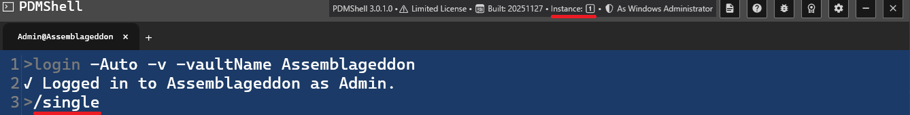
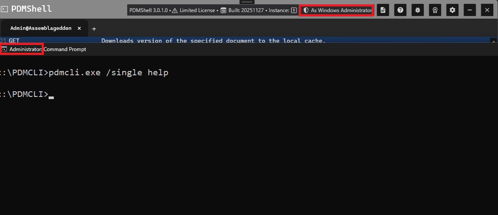

Notes About Running PDMShell in Single Instance Mode
PDMShell can run in two modes:
- Multi Instance Mode (default)
- Single Instance Mode (one controller instance, all commands routed to it)
Single instance mode is useful when you want:
- faster execution for multiple commands
- automation pipelines that require sequential execution
Single Instance Mode Overview
To enable Single Instance Mode, start PDMShell using:
pdmcli.exe /single
or
pdmcli.exe -single

When PDMShell is running in Single Instance Mode, you’ll see a single-instance indicator in the top-right corner of the window. It shows a “1†icon, confirming that all commands will be routed to this instance from other single instances.
If PDMShell is not running in single instance mode, the indicator will display an infinity symbol (∞), meaning multiple PDMShell instances are allowed and each command launches independently in its own PDMShell process.
With single instance, you can:
✅ launch PDMShell as a single instance controller
✅ allow subsequent commands to reuse the same PDMShell instance
✅ improve performance if triggered from cmd.exe or Dispatch
✅ prevent multiple conflicting PDMShell instances
UAC, Permissions, and Single Instance Mode

PDMShell’s Single Instance Mode relies on Windows’ global mutex system. Because of this, User Account Control (UAC) and process elevation matter.
To attach to the single instance, you must ensure that:
- If the first instance is started as Admin, all following calls must also run as Admin
- If the first instance is started without elevation, all following calls must also run without elevation
Warning
Avoid running PDMShell as a Windows Administrator if you have custom add-ins installed. Check-in and check-out commands can create instances of your add-in inside the host application's memory. If the add-in was registered under a different user or UAC level, PDM will throw a “Class not registered†error.
Executing Commands in Single Instance Mode
Once PDMShell is running with /single, all subsequent calls to pdmcli.exe must also include /single, or PDMShell will launch a new instance instead of attaching.
Example:
pdmcli.exe /single "help command checkout"
This will:
- connect to the already running instance
- execute
help command checkout - return output immediately
Important
When calling from cmd.exe, /single or -single cannot be contained in the double quote.
Headless Mode and Script Startup
Headless mode starts PDMShell with a smaller shell window titled PDMShell Headless.
pdmcli.exe -headless
or
pdmcli.exe /headless
Headless mode hides visual-editor controls and status text that are not needed during command execution. It also skips visual-only startup work and online startup license validation. Command-level license checks still run when a licensed command is executed.
PDMShell can also detect a .pdmshell script path on the command line and run it through runscript.
pdmcli.exe "C:\Vault\Scripts\CreateECO.pdmshell"
pdmcli.exe "C:\Vault\Scripts\CreateECO.pdmshell" -items "123,45;678,90"
Use -edit when you want to open the script in the visual editor without running it.
pdmcli.exe -edit "C:\Vault\Scripts\CreateECO.pdmshell"
pdmcli.exe "C:\Vault\Scripts\CreateECO.pdmshell" -edit
Tips for Single Instance Mode
- Always include
/singlein every call - Use proper quote escaping when calling from Dispatch
- Use Single Instance mode for sequences of operations
- Use Multi Instance mode for isolated one-shot commands